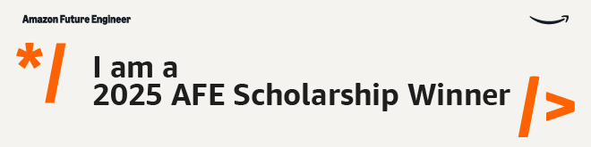

About Me
Driven by curiosity and real-world impact, I enjoy teaching, mentoring, and solving problems at the intersection of technology and education.
Summary
Zhenhong (Ryan) Meng
Entrepreneur, Trader, Nerdy Coder, Alpha-seeker. Looking for fun internships, research, or collaboration opportunities.
- lykcc123@uw.edu
- ryan.mzh@icloud.com
- Greater Seattle Area, WA
Awards
Amazon Future Engineer Scholarship 2025
Recipient of the Amazon Future Engineer Scholarship, awarded to 400 high school seniors annually. The scholarship provides up to $40,000 towards an undergraduate degree in computer science or related fields, along with a guaranteed paid summer internship at Amazon after the freshman year. This program supports students from underserved communities, aiming to build a more diverse tech industry. Learn more at amazonfutureengineer.com.
- Amazon.com, Inc
Education
University of Washington
2025 – Present
Seattle, WA
Pursuing a B.S. in Computer Science with interests in data analysis, financial modeling, and algorithmic applications in economic theory.
Bellevue High School & Bellevue College
Sep 2024 – May 2025
Bellevue, WA
Grade 12 Running Start student completing high school diploma while earning transferable college credits through dual enrollment at Bellevue College.
King's High School
Aug 2023 – May 2024
Shoreline, WA
Shanghai Experimental School International Division
Aug 2019 – May 2023
Shanghai, China
Professional Experience
 STEM Tutor
STEM Tutor
Feb 2025 – Present
AI & Robotics Academy, Bellevue, WA
- Taught coding fundamentals, robotics, and game logic to elementary students.
- Helped young learners develop critical thinking and problem-solving skills.
- Created engaging activities that made programming accessible and fun.
 Store Assistant
Store Assistant
Dec 2024 – Jan 2025
T&T Supermarket, Bellevue, WA
- First job in the U.S., taken shortly after moving to support myself during a period of financial uncertainty.
- Handled packaging duties, restocked shelves, and provided customer service in a fast-paced retail environment.
- Learned practical workplace communication skills and built confidence navigating a new cultural and professional setting.
- Gained firsthand experience in business operations and customer interaction in a multicultural environment.
 Teaching Assistant
Teaching Assistant
Summer 2024
PricewaterhouseCoopers – You Plus Program, Shanghai
- Returned as a teaching assistant to mentor students in financial analysis and operational problem-solving for non-profit organizations.
- Led instructional sessions on interpreting balance sheets and applying strategic consulting frameworks.
- Helped students bridge theoretical concepts with real-world consulting challenges in a fast-paced, impact-driven environment.
 Student Ambassador
Student Ambassador
Sep 2023 – Dec 2024
UnionPay International, Remote
- Conducted payment acceptance testing to evaluate and improve UnionPay’s merchant network across local markets.
- Researched and contacted merchants to promote UnionPay services and identify expansion opportunities.
- Led student-led initiatives to raise brand awareness and enhance UnionPay’s visibility among international students and local communities.
Student
Summer 2023
PricewaterhouseCoopers – You Plus Program, Shanghai
- Joined PwC You Plus business consulting program focused on social impact and non-profit advisory.
- Analyzed operations of a non-profit organization that sells donated second-hand goods to fund education support for disadvantaged children.
- Conducted financial analysis and identified inefficiencies using balance sheet data; developed and implemented targeted solutions to improve operational effectiveness.
 Founder
Founder
Dec 2022 – Present
DreamWorkers – Shanghai, China
- Founded the Dream-Worker initiative, creating an inclusive environment for underprivileged children in the local community.
- Connected with international high schools and recruited over 100+ volunteers. Projects included documentaries, parent autobiographies, mission trips, joint sports, and fundraising.
- Designed the organization as a platform to connect idle social resources and reinvest them into meaningful student-led initiatives across Shanghai.
- Managed advertising, finance, event planning, and human resources; collaborated with local government officials to expand outreach.
- View 2023 Website Snapshot
- Read More
 Co-Founder
Co-Founder
Nov 2019 – Dec 2022
Tiance Network Security Edu L.L.P. – Shanghai, China
- Helped to found a cybersecurity education platform and led content production, advertisement, and course package management.
- Helped digitize and organize recorded lectures, notes, and study materials for remote distribution during the COVID era.
- Helped 500+ Student to Get Certified in Cyber-Security Defense
- Drove platform expansion during the rise of online education, resulting in 200% growth and $150k monthly cash flow.
- Organized Competitions, 100+ Participated
- Business operations ceased due to nationwide policy changes affecting online education platforms.
Clubs & Activities
Executive Branch Office | Evergreen Boys State
Summer 2024
Washington State
- Assisted in legislative negotiations, bill signing, and policy planning as part of the executive government simulation.
- Worked across party lines and cities to establish balanced and representative student policies.
Programmer | King’s Robotics Team 4911
Nov 2023 – Apr 2024
King’s High School
- Developed a scouting tool for analyzing match data to improve robot strategy planning.
Founder | Applied Math Club
Sep 2023 – Jun 2024
King’s High School
- Led King's team in AMC competitions and modeling contests such as IMMC and HiMCM.
- Organized weekly sessions and helped members with calculus tutoring and test prep.
Varsity Programmer & Data Analyst | Math Modeling Club
Sep 2019 – Jun 2023
Shanghai Experimental School International Division
- Built mathematical models using linear regression, AHP, CRITIC, TOPSIS, and machine learning techniques.
- Participated in international competitions including IMMC and HiMCM.
Founder | SESID TV
Aug 2022 – Jun 2023
Shanghai Experimental School International Division
- Founded and led the student-run TV station, producing interviews, event recaps, and feature stories.
- Used Adobe Premiere Pro and Photoshop extensively for video production and editing.
- Made SESID Video Watermark.
Head of Publications | SESID Students Union
Aug 2021 – Jun 2023
Shanghai Experimental School International Division
- Helped found the SESID Students Union; led all official school media and publications.
- Produced 12+ videos and 40+ articles; helped build a student audience of over 20,000 followers.
Founder and Head | Python Coding Club
Aug 2019 – May 2021
Shanghai Experimental School International Division (SESID)
- Founded a coding club to share knowledge in Python and C++ with fellow students.
- Taught algorithm design and coached teams for competitions such as ACSL, earning regional recognition.
- Took my members to American Computer Science League(ACSL) and got Regional Award.
Minecraft Server Builder | C++ Club
Nov 2018 – May 2019
Shanghai Experimental School International Division (SESID)
- Convinced classmates to play Minecraft PvP during other students' presentations (true leadership).
- Built and hosted a custom Minecraft PvP server from scratch because why not.
- Coded a custom Java plugin to spice up combat. Balance patches? Never heard of them.
- Received multiple warnings from the instructor; wore them like badges of honor.